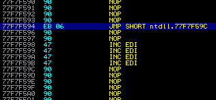
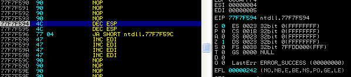
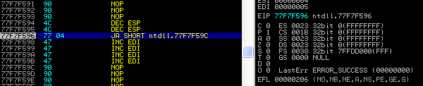
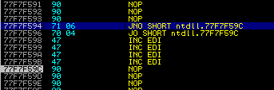

SEH pointers. The SEH pointer is overwritten with an address that contains a POP # POP # RET instruction sequence, and this results in EIP being redirected to the NSEH pointer address. The NSEH pointer address is contained in the 4 bytes immediately preceding the SEH pointer.4 bytes is not going to be enough to fit the entire instruction sequence in.EIP is pointing to those 4 bytes, the first thing that needs to be done is execution needs to move to an area of memory that is controlled by the attacker via a jump. Depending on the exploit, the attacker may need to jump forwards or backwards.2 bytes, and so in the case of SEH overwrites it is common to see the NSEH entry overwritten with a 2 byte jump followed by NOP instructions to fill the gap. See the image below for a synthetic example:
0x77F7F594 is the NSEH pointer location and that 0x77F7F598 is the SEH pointer location. The example shows that NSEH contains a JMP SHORT instruction which moves control forward to the address at 0x77F7FC9CPOP # POP # RET sequence has been executed, the JMP instruction is hit and EIP then gets set to the value immediately following the SEH address. We can assume at this point that the attacker has been able to control the area of memory immediately following and hence from there they can perform arbitrary execution.JMP instruction maps to the bytes EB 06, and EB is a byte that tends not to make web servers very happy. As a result, using this instruction in the NSEH block isn’t possible. Instead we need to find other jumps which are bad-character friendly. As a generalisation, if we can stick to instructions made up of bytes that are lower than 7E we can usually get by. This does come with some caveats, such as spaces, newlines or / characters when dealing with web server URIs.JA instruction, otherwise known as Jump if above, which has the byte code of 77. This instruction will result in a jump if both the CF and ZF flags are 0. To prepare for this the attacker can use the extra two bytes to operate on registers and modify flags.0 by using the DEC ESP instruction. Here is what it might look like before execution:
DEC ESP instructions we see this:
JA we have made an assumption that CF will be 0 all the time when in fact it might not be. If CF is ever 1, then the jump would not be taken. This kind of assumption might apply regardless of which kind of conditional jump we choose to use. Guaranteeing the correct combination of flags in a given scenario might not be possible (though admittedly, it usually is).4-byte block.s, this could be a flag for example, and a predicate P which will test s to determine whether or not a jump is made. Those who are savvy with the basics of predicate logic will know that P(s) || ~P(s) == true. That is, any boolean value b logically ORed with ~b will result in a value of true. In our case s is not known (ie. the content of the flag at a given time might not be known), but P is known (ie. we are using JA, or JO for our jump). To determine ~P, we can just look for the logical opposite of the jump instruction that we have chosen. For example, the “opposite” of JA is JNA (which is a synonym for JBE, or Jump if below or equal).EIP pass over them. If the first condition succeeds our jump is taken and we win. If not, the second condition must succeed (it’s the inverse of the first after all), and so we still win.JNA is 76 and JA is 77. So this means that the chances of the characters being bad are slim (but admittedly non-zero).JO and JNO:
EIP is at 0x77F7F594 a test is performed to see if OF (the overflow flag) is set to 0. If it is, then a jump is performed and EIP moves to 0x77F7F59C .EIP moves to 0x77F7F596, at which point a test is performed to see if OF is set to 1. We can conclude that this jump must always happen because we already know that OF wasn’t set to 1 which caused the previous jump to fail. As a result EIP will move to 0x77F7F59C, just as the first jump does.70 is a valid byte, there’s a good chance that 71 is as well. Admittedly this isn’t always the case, but we do have quite a few conditional jump pairs to play with, so there’s a good chance that at least one of them would work.